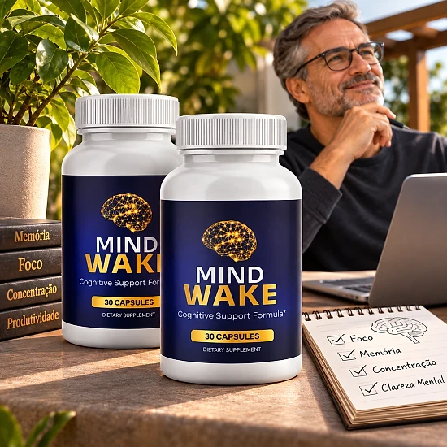
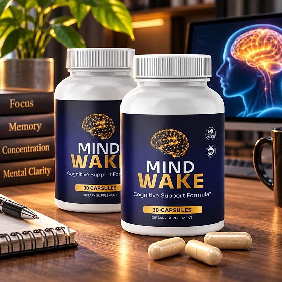
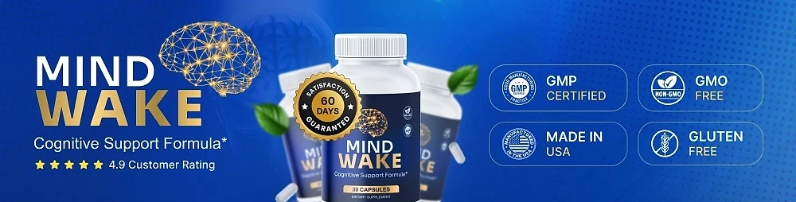

What Is MindWake And How Does It Work?
MindWake is a daily capsule supplement designed to support mental clarity, memory, and focus for adults who feel that mental fatigue, brain fog, and small lapses in attention have become more common as life gets busier and the years go by — through a simple, natural routine, without relying on extra coffee or complicated plans.
It utilizes a blend of botanical extracts, amino acids, and brain-supporting nutrients that combines Ginkgo Biloba, Phosphatidylserine, N-Acetyl L-Carnitine, Bacopa Monnieri, L-Glutamine, and Alpha GPC to support memory, recall, and overall cognitive health, helping the brain maintain its natural processes throughout the day.
The ingredients in MindWake were chosen, according to the official website, for their role in mental clarity, memory retention, and focus. Ginkgo is associated with healthy blood flow to the brain, Phosphatidylserine and Alpha GPC are linked to memory and learning, and Bacopa has a long traditional history in supporting memory.
Rather than acting as a stimulant, MindWake focuses on consistent daily support. The brand describes the formula as working naturally and gently, so it is meant to become part of a routine rather than deliver a sudden jolt followed by a crash.
With consistent daily use, the official website reports that many users notice improved mental clarity, better focus, and enhanced memory support. Customers quoted on the site describe changes after several weeks of use. Individual results may vary.
From a practical standpoint, MindWake comes as a bottle of 30 capsules, one capsule a day, so each bottle covers about a month. It is designed to fit easily into a morning routine with just a glass of water.
According to the official website, MindWake is manufactured and packaged in the USA under strict quality and safety standards for dietary supplements, using domestic and carefully sourced global ingredients. It is not intended to diagnose, treat, cure, or prevent any disease, and it is meant to complement a healthy lifestyle, not replace medical care.
MindWake Ingredients
Every capsule of MindWake combines six botanical extracts, amino acids, and nutrients, chosen to support clarity, memory, and focus as part of a consistent daily routine:
Ginkgo Biloba (leaf extract): Associated with healthy blood flow to the brain and cognitive performance.
Phosphatidylserine: A naturally occurring phospholipid that supports memory, learning, and mental processing speed.
N-Acetyl L-Carnitine HCl: Plays a role in brain energy metabolism and supports focus and mental clarity.
Bacopa Monnieri (leaf extract): Traditionally used to support memory retention and cognitive function.
L-Glutamine: An amino acid involved in neurotransmitter function and brain communication.
Alpha GPC: Supports acetylcholine levels, which are important for memory and learning.
Together, these ingredients are designed to support clear thinking, recall, and long-term brain health. The official website names every ingredient, but it does not publish the amount of each one per capsule. The FAQ describes the combination as a blend designed to support mental clarity, memory, and cognitive performance naturally and gently, in a single capsule that is easy to take every morning.
MindWake Side Effects
According to the official website, MindWake is made with carefully selected natural ingredients that are generally recognized as safe when used as directed. It is designed for adults who want a simple, balanced approach to cognitive support, without the jittery feeling that strong stimulants can cause.
The brand states that MindWake is manufactured and packaged in the United States under strict quality and safety standards, and the seals on the official banner mention GMP-certified production, non-GMO, and gluten-free ingredients.
The official FAQ says there have been no reported adverse effects, and MindWake is generally considered a well-tolerated option. Still, it contains active botanicals such as Ginkgo Biloba and Bacopa Monnieri, so anyone sensitive to these ingredients should start carefully and stop using it if they notice any discomfort. Do not exceed one capsule a day.
The official website advises anyone who is pregnant, nursing, has a medical condition, or takes prescription medications to consult a healthcare professional before use. This is especially relevant for people taking blood thinners, since Ginkgo can affect circulation, and for anyone combining several brain or mood supplements, as one of the customers quoted on the site did by checking with his doctor first.
MindWake Dosage
MindWake is meant to be taken once a day, every day, and it is designed to fit easily into a daily routine, making consistency simple and convenient. It comes as a capsule, with no powders to mix and nothing complicated to prepare.
The recommended approach, according to the official website, is to take one (1) capsule daily with water, preferably 20 to 30 minutes before a meal. Taking MindWake at the same time each day helps build the habit. Each bottle contains 30 capsules, which equals a 30-day supply.
For best results, consistency is key. The official website recommends consistent daily use, and the customers quoted on the site describe noticing changes after several weeks to two months. Individual results may vary.
There is no need for complex schedules or multi-step routines. One capsule a day is designed to build support gradually, alongside good sleep, regular physical activity, a balanced diet, and activities that keep the mind engaged, such as reading or puzzles.
As with any wellness product, it's important not to exceed the recommended dosage. Store the bottle in a cool, dry place and keep it out of reach of children. MindWake works best when used regularly, combined with healthy daily habits.
MindWake – Refund Policy
You can order MindWake with confidence, knowing that every purchase is protected by a 60-day satisfaction promise, counted from the original purchase date. This gives you time to try the capsules and decide if they deliver the support you expect.
According to the official refund policy, customers who are not fully satisfied should contact customer support within 60 days of purchase through the contact page. All bottles must be sent back, whether they are empty or unopened, together with any bonuses or gifts, and the return shipping is paid by the customer unless the wrong or a damaged item was sent.
How the refund process works: Contact support with the subject line “Refund Request” and your order number. The team reviews the request and sends return instructions; the package must then be shipped within 7 calendar days with a trackable method, the packing slip inside, and the tracking ID sent to support. The policy also mentions an optional partial refund in some cases, with no return required.
Customer Support Contact Information: the contact page and an SMS support number are listed on the official website, and the return address is in Aurora, Colorado, USA.
Refund Processing Time: Inspection and approval usually take 3 to 5 business days after the return arrives, and the refund then reaches the original payment method in 5 to 7 business days for credit cards or 5 to 10 for debit cards.
This refund policy is designed to give customers a clear and transparent experience when trying MindWake.
MindWake Customer Reviews
-
Margaret S., North CarolinaVerified Purchase – 6 Bottles
“I'm 68 and had started forgetting names at church and misplacing little things around the house. After about six weeks on MindWake, my daughter said I sounded like myself again on the phone. I feel clearer, calmer, and more present in conversations.”
-
Robert H., FloridaVerified Purchase – 6 Bottles
“Retired three years ago and the mental slowdown caught me off guard. I tried a few supplements with no real results. MindWake is the first one I actually felt working. I'm reading full books again and remembering what I read the next morning.”
-
Frank D., PennsylvaniaVerified Purchase – 6 Bottles
“I'm 73 and was honestly skeptical because I take medication and don't want to mix things. I checked with my doctor first, then started MindWake. Two months in and my recall is noticeably better. Even my wife commented that I'm not asking her to repeat things as much.”
MindWake – Where To Buy
MindWake is sold through its official website, so if you decide to try it, it's important to be careful about where you purchase it. The official website is the only sales channel the manufacturer lists, and it does not point to marketplaces such as Amazon, eBay, or Walmart.
Listings on third-party platforms may look similar but cannot be verified as authentic, raising concerns about safety, quality, and ingredient freshness. Products purchased outside the official source may not be covered by the 60-day satisfaction promise.
For this reason, most customers recommend purchasing MindWake only through the official website. Buying directly from the official source ensures you receive the authentic original product, with access to customer support through the contact page and an SMS line, and the full guarantee. According to the FAQ, it is a one-time purchase unless you choose an optional subscription at checkout.
To avoid counterfeit batches and ensure maximum quality, always verify that you are ordering from the official MindWake website before completing your purchase.
To ensure you’re getting the authentic product, most users choose to visit the official website.
Is MindWake A Scam?
Based on what the official website discloses, MindWake does not appear to be a scam. It is a real product, sold through an established retailer, and formulated to support mental clarity, memory, and focus as part of a consistent daily routine.
The ingredients used in MindWake — Ginkgo Biloba, Phosphatidylserine, N-Acetyl L-Carnitine, Bacopa Monnieri, L-Glutamine, and Alpha GPC — are well known in the cognitive wellness field and are named on the official website for transparency, although the amount of each one per capsule is not published.
In addition to its formula, MindWake is, according to the official website, manufactured and packaged in the United States under quality and safety standards for dietary supplements, and the brand lists a return address in Colorado, a contact page, and an SMS support number.
Customers quoted on the official website describe feeling clearer, reading and remembering more, and better recall after several weeks of use. Results vary from person to person, and no supplement can promise a specific outcome, which is why realistic expectations and consistent use matter.
MindWake is backed by a 60-day satisfaction promise with a clearly described return process. This policy underscores the manufacturer's commitment to customer satisfaction and product integrity.
If you're looking for a simple daily capsule to support focus, memory, and mental clarity without strong stimulants, MindWake is worth considering — especially when purchased directly from the official website.
For those who want to verify product details or check current availability, the official MindWake website remains the safest option.

Check Availability On Official Website
